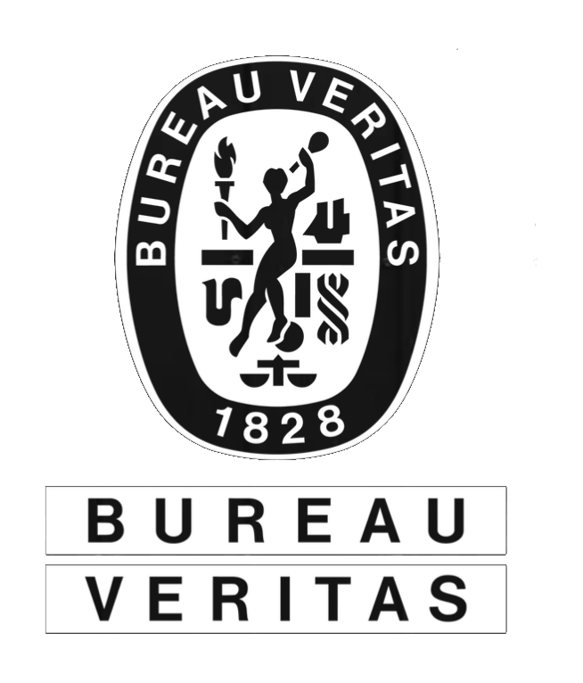

Inicio
Kellun brinda soluciones técnicas integrales para operaciones del
sector energético e industrial, combinando personal capacitado,
equipamiento propio y procedimientos orientados a la seguridad
y la eficiencia operativa.
Acompañamos proyectos de distinta complejidad con un enfoque
técnico, garantizando confiabilidad, cumplimiento y resultados
acordes a los estándares de la industria.
Nosotros
Kellun es una empresa dedicada a la prestación de servicios técnicos
industriales en entornos de alta exigencia operativa. Nuestro trabajo
se basa en la planificación, el cumplimiento de normas de seguridad
y la mejora continua de nuestros procesos.
Operamos con personal capacitado y equipamiento propio, adaptándonos
a las necesidades de cada proyecto para ofrecer soluciones confiables,
eficientes y alineadas con los requerimientos del cliente.
Certificaciones
Nuestras operaciones se desarrollan bajo estándares reconocidos por la industria.
Kellun cuenta con certificaciones emitidas por organismos de referencia como
IRAM — Instituto Argentino de Normalización y Certificación
y Bureau Veritas, garantizando procesos alineados con las
exigencias del sector.


Clientes y experiencia
Hemos acompañado proyectos y operaciones para empresas del sector energético,
industrial y de la construcción, aportando soluciones técnicas en distintos
niveles de complejidad.
- Oil
- MIS
- Mero S.A.
- IPF S.A.
- Municipalidad de Cutral Có
Flota y equipamiento
Contamos con una flota propia de maquinaria pesada, equipos de izaje, plataformas de altura, unidades de transporte y generación eléctrica para afrontar proyectos de distinta escala.
Ver flota y equipamiento
Servicios
Brindamos soluciones industriales integrales para operaciones del sector energético
e industrial, combinando personal capacitado, equipamiento propio
y altos estándares de seguridad.
Movimiento de suelos
Preparación y acondicionamiento de áreas operativas,
incluyendo trabajos de movimiento, nivelación y soporte
para obras industriales.
Filtrado de fluidos en terminación de pozos
Servicio especializado de filtrado con equipamiento técnico,
control de calidad y soporte operativo para procesos de terminación.
Hot Oil / Water
Operaciones térmicas para mantenimiento de pozos,
limpieza de líneas y procesos de circulación controlada.
Tratamiento y recubrimiento de estructuras y cañerías
Hidroarenado, limpieza y recubrimientos industriales
en estructuras, tanques y cañerías, tanto en base como en campo.
Hidrolavado industrial
Limpieza técnica de tanques, piletas, cañerías
y equipos industriales con procedimientos seguros.
Lavadero industrial - Base Añelo
Instalaciones para lavado, mantenimiento
y acondicionamiento de equipos pesados.
Transporte, suelos contaminados e izaje
Logística industrial, traslado de cargas sólidas y líquidas,
servicios de izaje y soporte operativo.
Obras civiles
Cuadrillas especializadas para construcción,
mantenimiento y obras industriales.
Obras de piping
Montaje, soldadura y fabricación de sistemas de cañerías
para instalaciones industriales.
Supervisión de obra
Gestión técnica, inspección y coordinación operativa
para proyectos industriales.